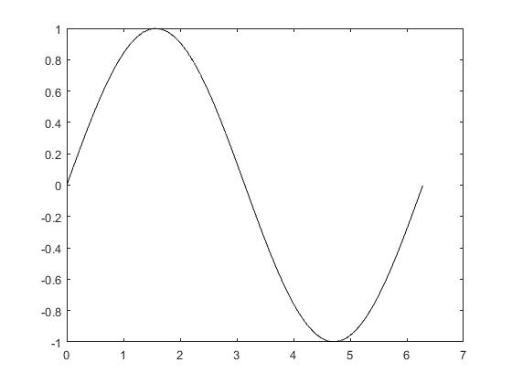

Contents
% Author: Dylan Mikesell % Created: 20 September 2016 % Last modified: 21 September 2016
clear workspace variables
clear all; close all;
Make a vector and plot
x = linspace(0,2*pi,180/pi);
y = sin(x);
h = figure;
plot(x,y,'k');
 Create math in MATLAB publishing
This is called inline math with a single dollar sign ($) around the math.
This is called display math with two dollar signs ($$) around the math.
Make bullets
- This is the first bullet
- This is the second bullet
% The trick is the '% *' symbols. Also, make sure there are no empty lines % betweeen the bullets and the '%% section title' line. Otherwise, the % bullets are not interpreted as bullets. If you have blank lines, make % sure to comment those lines. Same goes for the math examples above.
How about a numbered list? Just use # instead of *
- ITEM1
- ITEM2
You can do hyperlinks as well
% Note the space in between the URL and the text that will be linked.
Types of text
You can write in bold.
You can write in italic.
% Note the *a* notation for bold and _a_ for italic.